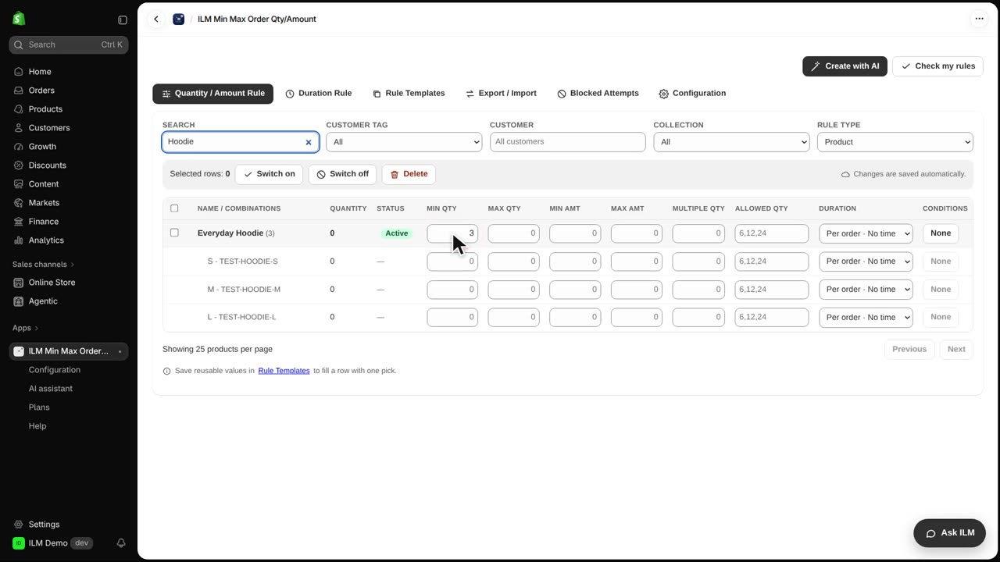
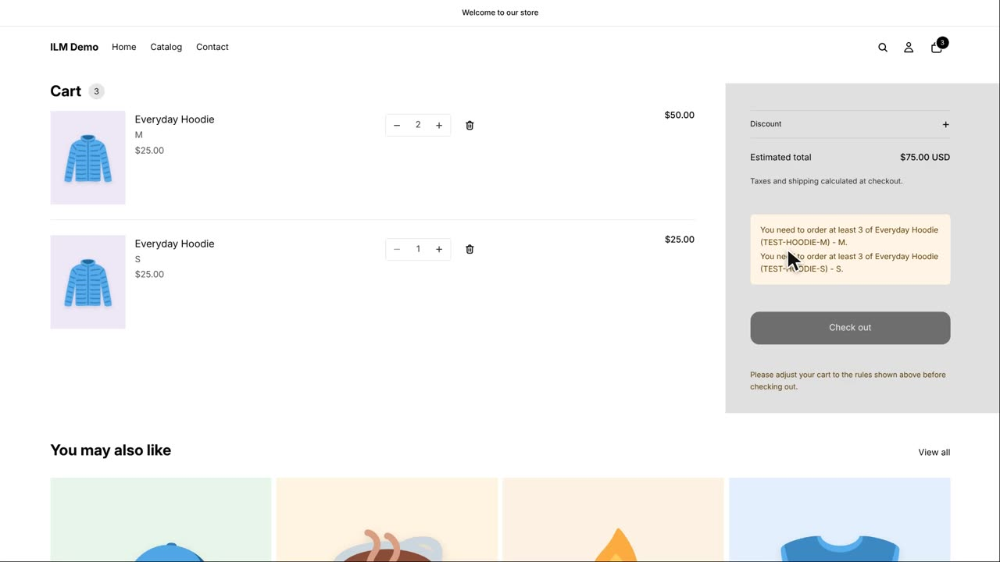
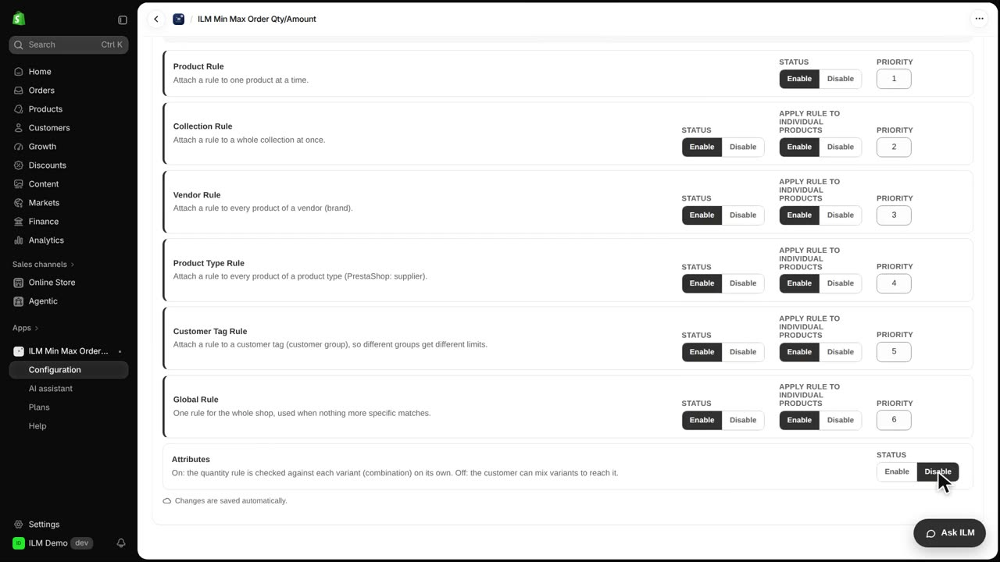
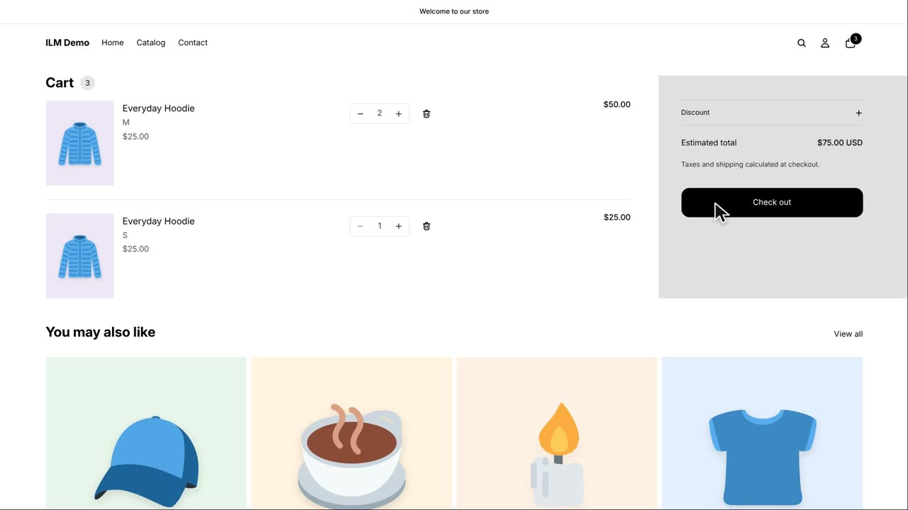

The Attributes setting decides whether a product rule counts each variant on its own, or all variants together. This matters when a product comes in sizes or colors, because three of each size is a very different rule from three in total. Today we use the Everyday Hoodie with a Min Qty of three to see both behaviors in action.
We start in the app on the product rules list. The Everyday Hoodie row shows Min Qty set to three, so this product requires at least three units in the cart. Nothing else is changed here; the rule is simply attached to the product.

Attributes is enabled by default when you install the app. With it on, the rule is checked per variant, so each size must reach three on its own. A shopper who adds one small and two medium hoodies sees the cart refused, because neither size reaches the minimum by itself.

Now we open Configuration and scroll to the Attributes card, then click Disable. Turning Attributes off changes the meaning of every product rule: quantities of all variants are added together before the minimum is checked.

Back in the cart, the same one small plus two medium hoodies now passes. The sizes are summed to three, which meets the Min Qty of three, and the shopper can continue to checkout.
